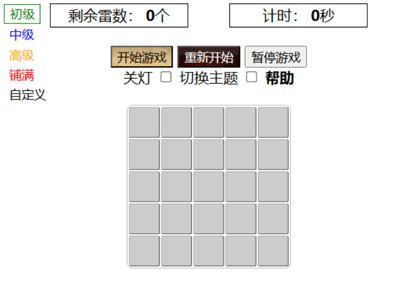

扫雷：玩法
第一次点击不会是雷。格子里的数字表示它周围有几个雷。游戏目标是找出所有雷。“触雷”则输。点击表情重新开始。
二选一留到最后，可任选，需先清完其他方块。
电脑：鼠标右键点击原始方块，以小旗标记为雷，再点去除标记。标记的雷数和数字匹配时，点击数字（左右键均可）翻开周围的安全区域。鼠标左键点击无标记方块则直接打开。
手机或平板：在触屏上点击方块即标记为雷，再点去除标记。标记的雷数和数字匹配时，点击数字翻开周围的安全区域。长按方块直接打开。（可设置为点击直接打开；或点击三次打开）
扫雷游戏起源于1973年的"方块"游戏。1992年微软发布的Windows 3.1中加入该游戏，从此风靡全世界。玩扫雷游戏，可以锻炼观察和推理能力，培养细心和耐心。
基础定式
局域网中如访问不正常，可清空缓存或用https访问。
安卓手机上连击放大问题：【设置】-【智能辅助】-【无障碍】-【放大手势】-关闭。
全部显示隐藏
扫雷：微软玩法介绍
扫雷是一种具有迷惑性的对记忆和推理能力的简单测试，它是长久以来最受欢迎的Windows 游戏之一。游戏目标: 找出空方块并避免触雷。
听起来很容易，不是吗 ?
启动游戏的步骤
您可以更改扫雷区颜色，以及是否隐藏地雷或鲜花
- 单击打开“游戏”
- 双击“扫雷”
(如果看不到该游戏，则可能需要打开 Windows 游戏。请参阅游戏的位置在哪里 ?)
- 择一个难度级别:“初级”“中级”或“高级”
- 若要开始，请单击一个方块
保存游戏的步骤
- 如果需要稍后完成游戏可以退出该游戏，然后单击"保存次机该游戏时次的游戏。如果继
更改游戏选项的步骤
您可以更改扫雷区颜色，以及是否隐藏地雷或鲜花
- 单击打开“游戏”
- 双击“扫雷”
(如果看不到该游戏，则可能需要打开 Windows 游戏。请参阅游戏的位置在哪里 ?)
- 单击“游戏”菜单，然后单击“选项”
- 进行选择，然后单击“确定”
自定义游戏外观的步骤
您可以更改扫雷区颜色，以及是否隐藏地雷或鲜花
- 单击打开“游戏”
- 双击“扫雷”
(如果看不到该游戏，则可能需要打开 Windows 游戏。请参阅游戏的位置在哪里 ?)
- 单击“游戏”菜单，然后单击“更改外观”
- 进行选择，然后单击“确定”

扫雷:规则和基本要求
游戏目标
找出空方块，同时避免触雷。清除扫雷区的速度越快，得分就越高。
扫雷区
扫雷有三个标准扫雷区可供选择，各扫雷区的扫雷难度依次递增。
- 初级:81个方块、10个雷
- 中级:256个方块、40个雷
- 高级:480个方块、99 个雷
还可以通过单击“游戏”菜单，然后单击“选项”创建自定义扫雷区。扫雷游戏支持最多有 720个方块和668个雷的扫雷区
玩法
扫雷的规则非常简单:
- 挖开地雷，游戏即告结束
- 挖开空方块，可以继续玩
- 挖开数字，则表示在其周围的八个方块中共有多少个雷，可以使用该信息推断能够安全单击附近的哪些方块。
提示与技巧
-
标记地雷。
如果您认为某个方块可能藏有地雷，请右键单击它。这会在该方块上做一个旗标。(如果不确定，请再次右键单击标记为问号。)
-
研究图案。
如果一行中有三个方块显示为 2-3-2，您就会知道该行旁边可能排列着三个雷。如果一个方块显示为 8，则它周围的每个方块下面都有一个雷。
-
浏览未探测的。
如果不确定下一个单击位置，可以尝试清除某些未探测的区域。在未标记方块的中间单击比在可能有雷的区域单击要好一些。